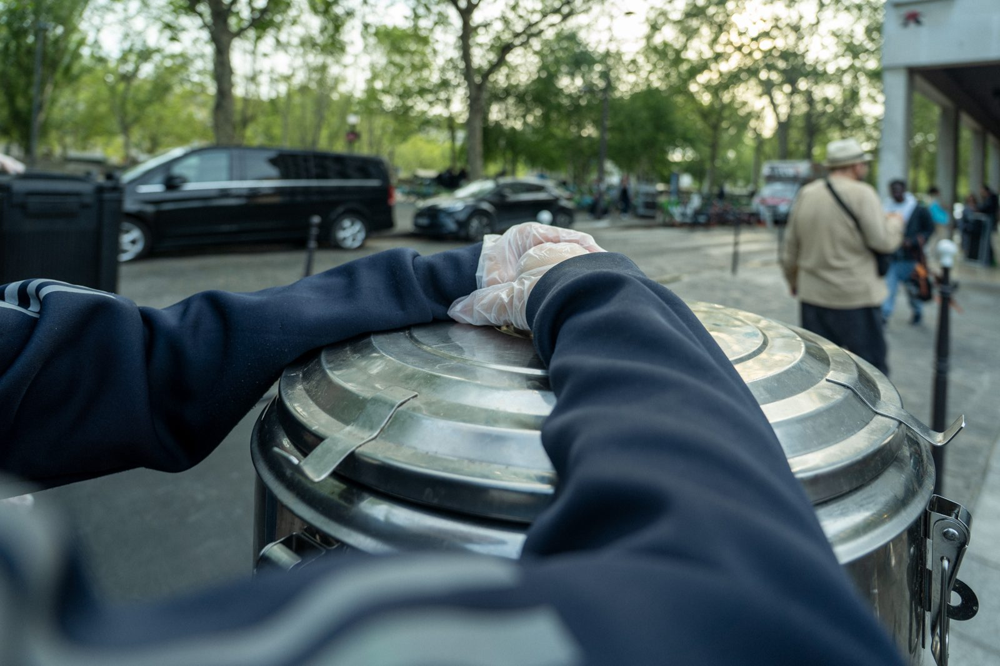

Chaque euro se voit.
Ce que nous avons fait en 2026, d’où vient l’argent et à quoi il sert. Données arrêtées au 31 octobre 2026.
2026, de janvier à octobre.
Depuis l’ouverture du local en juillet 2025, l’association fonctionne toute l’année, à un rythme régulier.
Le rythme a doublé.
| Activité | 2025 | 2026, au 31 octobre |
|---|---|---|
| Distributions alimentaires | 1 par semaine, depuis juillet 2025 | 2 par semaine : 77 distributions, 999 passages |
| Invendus récupérés | ≈ 4 T sur l’année | 11,1 T en 10 mois, auprès de 17 commerces |
| Maraudes | 52 maraudes, 14 859 repas | Plus de 40 maraudes, ≈ 11 675 repas |
| Local et café | Ouverture en juillet 2025 | Lieu permanent : accueil, distributions, stockage, café |
11 119 kilos sauvés de la poubelle.
Des commerces nous donnent leurs invendus encore bons, via la plateforme Phenix. On les trie au local et on les redistribue gratuitement.
- 647
- 1 021
- 1 280
- 867
- 1 097
- 1 377
- 1 768
- 1 678
- 660
- 725
Kilos reçus chaque mois via Phenix, de janvier à octobre 2026. Valeur des produits donnés : 60 975 € HT, au prix d’achat des commerces. Ce sont des dons en nature, pas de l’argent encaissé.
D’où vient l’argent.
36 339 € de ressources documentées de janvier à octobre 2026. Nous ne dépendons pas d’un seul financeur.
60 975 € HTde produits alimentaires donnés par les commerces partenaires.
≈ 103 000 €c’est la valeur annuelle du temps donné par les bénévoles, au SMIC horaire brut.
Ces deux contributions en nature ne sont pas comptées dans les 36 339 €.
À quoi il sert.
51 495 € de charges documentées de janvier à octobre 2026. Chaque dépense est comptée une seule fois.
d’achats alimentaires directs par repas servi en maraude.
Hors transport, véhicule, assurance, matériel et frais généraux : ce n’est pas le coût complet d’un repas.L’écart entre charges et ressources sur la période est couvert par la trésorerie disponible en début d’année, issue de financements obtenus pour des actions qui se poursuivent en 2026. Il s’agit d’un suivi de gestion arrêté au 31 octobre 2026, avant la clôture des comptes de l’exercice.
Pour continuer en 2027.
L’objectif n’est pas de faire toujours plus, mais de tenir ce rythme dans la durée : deux distributions par semaine, une maraude chaque semaine, un lieu ouvert au quartier.